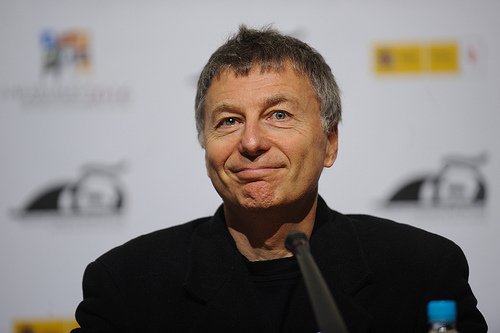
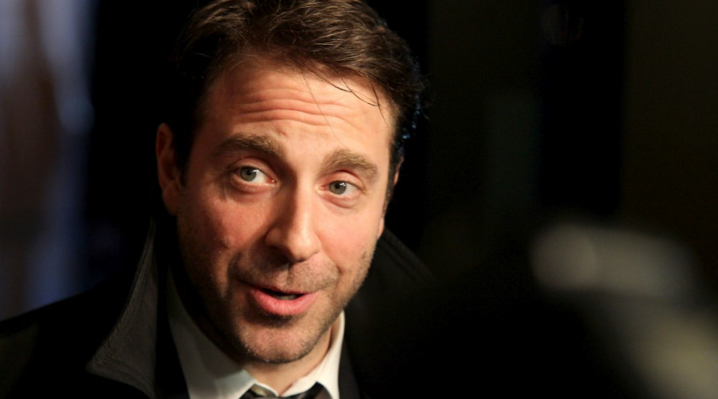

Film festival
1.6-2.6
Film Fest Jury

More...
Milo Manchevski is a Macedonian director, screenwriter, photographer and artist who lives and works in New York. His debut feature film Before Rain (Before the Rain, 1994) was nominated for the Oscar Award, and won the Golden Prize Lava at the Venice Film Festival, as well as the FIPRESCI and Independent Spirit Awards another thirty other awards. New York Times included this achievement on the list "1000 Best Movies ever recorded". Manchevsky directed four more feature films film - Bikini Mun (2017), Majke (Majki, 2010), Senki (2007) and Dust (2001), one episode of the The Wire series (HBO) and fifty short forms, including participation in the Venice Feature Reloaded (2013) project by a segment called Thursday.
Milčo Mančevski
Jury PresidentMore...
Milo Manchevski is a Macedonian director, screenwriter, photographer and artist who lives and works in New York. His debut feature film Before Rain (Before the Rain, 1994) was nominated for the Oscar Award, and won the Golden Prize Lava at the Venice Film Festival, as well as the FIPRESCI and Independent Spirit Awards another thirty other awards. New York Times included this achievement on the list "1000 Best Movies ever recorded". Manchevsky directed four more feature films film - Bikini Mun (2017), Majke (Majki, 2010), Senki (2007) and Dust (2001), one episode of the The Wire series (HBO) and fifty short forms, including participation in the Venice Feature Reloaded (2013) project by a segment called Thursday.
Director, Macedonia/USA
Mila Turajlić
Jury memberMore...
Mila Turajlić was born on July 4, 1979 in Belgrade. She studied at the London School of Economics, as well as at the FDU in Belgrade. She gained experience by working on films such as Apocalypto, Fade to Black and Brothers Bloom, and since 2005, he is the producer of a documentary film festival Seven magnificent in Belgrade. Her debut documentary Cinema Komunisto premiered at the IDFA Festival (International Documentary Filmfestival Amsterdam) 2010, and won 16 awards worldwide, including the Golden Hugo Award festival in Chicago. Her second feature documentary, The other side of everything (2017), is shown at TIFF, the film festival in Toronto, and at the IDFA Festival he won the Best Feature Film Award.
Director, Serbia

Jovan Jovanović
Jury memberMore...
Born in Belgrade in 1940. He graduated from directing on Academy of Theater, Film, Radio and Television Middle-school with the featured film, "Izrazito ja" (1967), which was named the best film in all categories at the New York Festival of Young Authors. His short documentary Colt 15 Gap (1971) He was awarded at festivals in Oberhausen, Utrecht, Belgrade. The most important Jovanovic documentary films are: The revolution that runs (1972), Working people artists (1975), Drug addicts (1976), The Man Who Made Systems (1990), Vukovar Why (1991). His most important feature films are The Distinctly Me (1969), Young and healthy as Rose (1971), Landscape in the Fog (1984).
Director, Serbia

More...
Gordan Kicic was born on August 5, 1977 in Belgrade. He graduated from the FDU in Belgrade in the class of prof. Preraga Bajcetic, 2001. He is a permanent member of the Theatrical Ensemble Atelje 212 from 2009. He has noticed outstanding roles in films Ustanicka Street, How the Germans Stole Me, Tour, Seven and a, When I grow up I'll be a Kangaroo, series Foxes, All That Plain, Jagodići, Shadows over the Balkans ... For his achievements in film and theater, he has won many awards "Car Constantine" at Film Meetings in Nis for the role in the film Little Night Music, Great Charters for the role in Natasha, "Zoran's brk" at the Days of Zoran Radmilovic in Zajecar for the role of Samoubica And in the play Innocence. TV News Award "Zoran Radmilović" for acting actor at Sterijino pozorje Festival, for the role of Vuf in the show Kos.
Gordan Kičić
Jury memberMore...
Gordan Kicic was born on August 5, 1977 in Belgrade. He graduated from the FDU in Belgrade in the class of prof. Preraga Bajcetic, 2001. He is a permanent member of the Theatrical Ensemble Atelje 212 from 2009. He has noticed outstanding roles in films Ustanicka Street, How the Germans Stole Me, Tour, Seven and a, When I grow up I'll be a Kangaroo, series Foxes, All That Plain, Jagodići, Shadows over the Balkans ... For his achievements in film and theater, he has won many awards "Car Constantine" at Film Meetings in Nis for the role in the film Little Night Music, Great Charters for the role in Natasha, "Zoran's brk" at the Days of Zoran Radmilovic in Zajecar for the role of Samoubica And in the play Innocence. TV News Award "Zoran Radmilović" for acting actor at Sterijino pozorje Festival, for the role of Vuf in the show Kos.
Actor, Serbia
Elma Tataragić
Jury memberMore...
Elma Tataragić was born in Sarajevo in 1976. Graduated in dramaturgy at the Academy of Performing Arts in Sarajevo in 2001. He is one of the founders of the Sarajevo Film Festival, where the Competition Program selector is. Since 2002 lectures at the Academy of Performing Arts Sarajevo, and published the book "The Style of Film Scenario" in 2011. Member of the Association of Film Workers of Bosnia and Herzegovina and European Film Academy. She has worked on numerous films such as First mortal experience, the North is gone, etc. Koscenarista is also the producer of the feature film Snow, which is premiered at the Film Festival in Cannes in 2016. She finished short film I remember who was successfully shown at festivals around the world, and in 2017 at the Berlin Film Festival premiered a movie When the day had no name (Who did not have a name) Teone Mitevska, for which she wrote the script.
Movie selector/Professor, Serbia